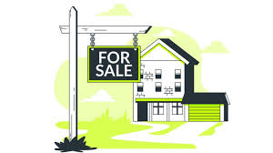

Real estate is property consisting of land and the buildings on it, along with its natural resources such as crops, minerals or water; immovable property of this nature; an interest vested in this an item of real property, buildings or housing in general.
Real estate is different from personal property, which is not permanently attached to the land, such as vehicles, boats, jewelry, furniture, tools and the rolling stock of a farm.
The natural right of a person to own property as a concept can be seen as having roots in Roman law as well as Greek philosophy. The profession of appraisal can be seen as beginning in England during the 1500s as agricultural needs required land clearing and land preparation. Textbooks on the subject of surveying began to be written and the term "surveying" was used in England, while the term "appraising" was more used in North America. Natural law which can be seen as "universal law" was discussed among writers of the 15th and 16th century as it pertained to "property theory" and the inter-state relations dealing with foreign investments and the protection of citizens private property abroad. Natural law can be seen as having an influence in Emerich de Vattel's 1758 "Law of Nations" which conceptualized the idea of private property.
One of the largest initial real estate deals in history known as the "Louisiana Purchase" happened in 1803 when the Louisiana Purchase Treaty was signed. This treaty paved the way for western expansion and made the U.S. the owners of the "Louisiana Territory" as the land was bought from France for fifteen million, making each acre roughly 4 cents.[7] The oldest real estate brokerage firm was established in 1855 in Chicago, Illinois, and was initially known as "L. D. Olmsted & Co." but is now known as "Baird & Warner."[8] In 1908, the National Association of Realtors was founded in Chicago and in 1916, the name was changed to the National Association of Real Estate Boards and this was also when the term "realtor" was coined to identify real estate professionals.[9]
The stock market crash of 1929 and the Great Depression in the U.S. caused a major drop in real estate worth and prices and ultimately resulted in depreciation of 50% for the four years after 1929.[10] Housing financing in the U.S. was greatly affected by the Banking Act of 1933 and the National Housing Act in 1934 because it allowed for mortgage insurance for home buyers and this system was implemented by the Federal Deposit Insurance as well as the Federal Housing Administration.[11] In 1938, an amendment was made to the National Housing Act and Fannie Mae, a government agency, was established to serve as a secondary market for mortgages and to give lenders more money in order for new homes to be funded.[12]
Title VIII of the Civil Rights Act in the U.S., which is also known as the Fair Housing Act, was put into place in 1968 and dealt with the incorporation of African Americans into neighborhoods as the issues of discrimination were analyzed with the renting, buying, and financing of homes.[13] Internet real estate as a concept began with the first appearance of real estate platforms on the World Wide Web and occurred in 1999.Real estate can be valued or devalued based on the amount of environmental degradation that has occurred. Environmental degradation can cause extreme health and safety risks. There is a growing demand for the use of site assessments (ESAs) when valuing a property for both private and commercial real estate.[17] Environmental surveying is made possible by environmental surveyors who examine the environmental factors present within the development of real estate as well as the impacts that development and real estate has on the environment. Green development is a concept that has grown since the 1970s with the environmental movement and the World Commission on Environment and Development. Green development examines social and environmental impacts with real estate and building. There are 3 areas of focus, being the environmental responsiveness, resource efficiency, and the sensitivity of cultural and societal aspects. Examples of Green development are green infrastructure, LEED, conservation development, and sustainability developments. Real estate in itself has been measured as a contributing factor to the rise in green house gases. According to the International Energy Agency, real estate in 2019 was responsible for 39 percent of total emissions worldwide and 11 percent of those emissions were due to the manufacturing of materials used in buildings.[18]
Residential real estate: Any property used for residential purposes. Examples include single-family homes, condos, cooperatives, duplexes, townhouses, and multifamily residences.
Commercial real estate: Any property used exclusively for business purposes, such as apartment complexes, gas stations, grocery stores, hospitals, hotels, offices, parking facilities, restaurants, shopping centers, stores, and theaters.
Industrial real estate: Any property used for manufacturing, production, distribution, storage, and research and development.
Land: Includes undeveloped property, vacant land, and agricultural lands such as farms, orchards, ranches, and timberland.
Some of the most common ways to invest in real estate include homeownership, investment or rental properties, and house flipping. One type of real estate investor is a real estate wholesaler who contracts a home with a seller, then finds an interested party to buy it. Real estate wholesalers generally find and contract distressed properties but don't do any renovations or additions.
The earnings from investment in real estate are garnered from revenue from rent or leases, and appreciation of the real estate's value. According to ATTOM, which oversees the nation's premier property database, the year-end 2021 U.S. home sales report shows that home sellers nationwide realized a profit of $94,092, a 45.3%return on investment, up 45% from $64,931 in 2020, and up 71% from $55,000 two years ago.
Real estate is dramatically affected by its location and factors such as employment rates, the local economy, crime rates, transportation facilities, school quality, municipal services, and property taxes can affect the value of the real estate.
Offers steady income
Offers capital appreciation
Diversifies portfolio
Can be bought with leverage
nmIs usually illiquid
Influenced by highly local factors
Requires big initial capital outlay
May require active management and expertise